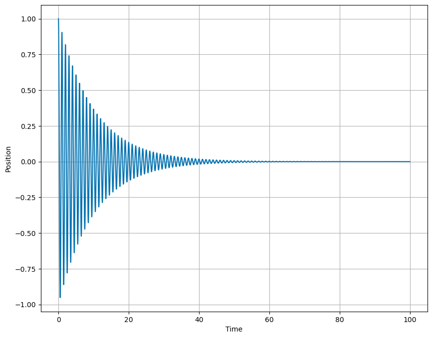
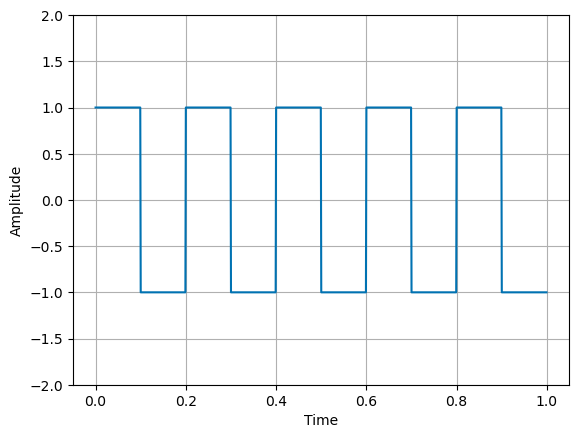

Homework 7 (Due 22 Mar)#
Due Mar 22 (midnight)
Date: Mar 11, 2024 Total points: 100
import numpy as np
from math import *
import matplotlib.pyplot as plt
import pandas as pd
%matplotlib inline
plt.style.use('seaborn-v0_8-colorblind')
Introduction to Homework 7#
This week’s exercises focus on oscillators and how to approximate the solution to the equations of motion using the SHO. The relevant reading background is:
chapter 5 of Taylor
chapter 8.6 of Boas
In both textbooks there are many nice worked out examples.
Practicalities about homeworks and projects#
You can work in groups (optimal groups are often 2-3 people) or by yourself. If you work as a group you can hand in one answer only if you wish. Remember to write your name(s)!
Homeworks are available ten days before the deadline.
How do I(we) hand in? You can hand in the paper and pencil exercises as a scanned document. For this homework this applies to exercises 1-4. Alternatively, you can hand in everything (if you are ok with typing mathematical formulae using say Latex) as a jupyter notebook at D2L. The numerical exercise(s) (exercise 5-6 here) should always be handed in as a jupyter notebook by the deadline at D2L.
Exercise 1 (10pt) Where does the energy go?#
The damped harmonic oscillator is described by the equation of motion is:
where \(m\) is the mass, \(b\) is the damping coefficient, and \(k\) is the spring constant.
The damping term (\(F_{damp} = - b\dot{x}\)) models the dissipative forces acting on the oscillator. The total energy for the oscillator is given by the sum of the kinetic and potential energies,
1a (2pt) What is the energy per unit time dissipated by the damping force?
1b (5pt) Take the time derivative of the total energy and show that it is equal (in magnitude) to the energy dissipated by the damping force.
1c (3pt) What is the sign relationship between the energy dissipated by the damping force and the time derivative of the total energy?
Exercise 2 (10pt), Unpacking the critically damped solution#
The solution for critical damping (\(\beta = \omega_0\)) is given by,
where \(A\) and \(B\) are constants. Notice the second solution \(x_2(t) = Bte^{-\omega_0t}\) has an additional linear term \(t\). We glossed over this solution in class, but it is important to understand why this term is present because it tells us about solving differential equations with pathologically difficult-to-see solutions.
Start with the under damped solutions,
where we have used the notation \(\omega_1 = \sqrt{\omega_0^2 - \beta^2}\).
2a (3pt) Show that you can recover the first solution \(x_1(t)\) by taking the limit of \(\beta \rightarrow \omega_0\) of \(y_1(t)\).
2b (2pt) Show that you cannot recover the second solution \(x_2(t)\) by taking the limit of \(\beta \rightarrow \omega_0\) of \(y_2(t)\) directly. What do you get?
2c (5pt) If \(\beta \neq \omega_0\), you can divide \(y_2(t)\) by \(\omega_1\). Now show that in the limit \(\beta \rightarrow \omega_0\) of \(y_2(t)/\omega_1\), we recover the form of \(x_2(t)\).
Exercise 3 (20pt), Complex Analysis#
Many of the techniques we use to solve differential equations rely on complex analysis. In this exercise, we will explore the relationship between complex numbers and the solutions to the differential equation. This is to motivate why we bother using them in the case of oscillators.
3a (5pt) Show that a complex number \(z = a + bi\) can be written in polar form as \(z = r(e^{i\theta})\), where \(r = \sqrt{a^2 + b^2}\) and \(\theta = \arctan(b/a)\). Draw a picture of the complex plane and the vector from the origin to the complex number \(z\).
3b (2pt) Prove that the absolute value of the complex number \(z\), \(|z| = \sqrt{a^2 + b^2}\), is given by the square root of the product \(zz^{*}\).
3c (2pt) Show that \(z^{*} = r(e^{-i\theta})\). Start from the definition of \(z\).
3d (3pt) Show that (z_1z_2)^* = z_1^z_2^$.
3e (3pt) Show that \((1/z)^* = 1/z^*\).
3f (5pt) Show that \(z=Ce^{i(\omega t)}\) produces an algebraic equation for C when used in the differential equation for the damped harmonic oscillator. What is the equation? What would happen if you instead used \(x(t) = A\cos(\omega t)\)?
It is this last result that often motivates our use of complex numbers in solving differential equations. We can turn a differential equation into an algebraic equation, which is often easier to solve.
Exercise 4 (15pt), Exploring the damped harmonic oscillator#
You can choose to solve this exercise using analytical, or graphical methods. Should you decide to use numerical methods, you should make sure to use a method that conserves energy. However, this exercise does not need to be solved numerically as closed form solutions exist.
The solution to the simple harmonic oscillator is given by,
where \(A_{sho}\) and \(B_{sho}\) are determined by the initial conditions. The solution to the underdamped harmonic oscillator is given by,
where \(A\) and \(B\) are also determined by the initial conditions.
Scenario 1#
An undamped oscillator has a period \(T_0 = 1.000\mathrm{s}\), but then the damping is turned on. We observe the period increases by 0.001 seconds.
4a (2pt) What is the damping coefficient \(\beta\)?
4b (2pt) By how much does the amplitude of the oscillation decrease after 10 periods?
4c (2pt) What would be able to notice more easily, the change in period or the change in amplitude?
Scenario 2#
An undamped oscillator has a period \(T_0 = 1.000\mathrm{s}\). With weak damping, the amplitude drops by 50% in one period \(T_1\). Recall the period of the damped oscillator is given by \(T_1 = 2\pi/\omega_1\).
4d (2pt) What is the damping coefficient \(\beta\)?
4e (2pt) What is the period of the damped oscillator?
4f (3pt) By how much does the amplitude of the oscillation decrease after 10 periods?
4g (2pt) What would be able to notice more easily, the change in period or the change in amplitude?
Exercise 5 (30pt), The Damped Driven Oscillator#
The damped driven oscillator is described by the equation of motion,
where \(F_0\) is the amplitude of the driving force and \(\omega\) is the frequency of the driving force. We reduced this equation by dividing by \(m\) to get the equation of motion in terms of the damping coefficient \(\beta = b/2m\) and the natural frequency \(\omega_0 = \sqrt{k/m}\). In the equation below, \(f(t) = F_0/m\).
We solve this equation for sinusoidal driving forces, \(f(t) = f_0\cos(\omega t)\) and demonstrated the resonance effect. In this exercise, we will numerically solve the equation of motion. This will allow us to explore the behavior of the damped driven oscillator for different periodic driving forces, not just sinusoidal ones.
Below we have written a numerical solver for the damped undriven oscillator; it’s similar to the prior codes we’ve used. Your task is to modify the code to include a driving force. We have used the second order Runge-Kutta method to solve the equation of motion. You can use the code as a starting point for the damped driven oscillator.
def driver(t):
"""
Function defining the driving force.
Can be modified to explore different driving mechanisms.
"""
return 0.0*t
def DDHO(y, t, omega_0, beta):
"""
Function to compute derivatives based on the damped driven oscillator model.
Notice the driving force is include but zero.
"""
x, v = y
dxdt = v
dvdt = -2 * beta * v - omega_0**2 * x + driver(t)
return np.array([dxdt, dvdt])
def rk2_step(y, t, dt, omega_0, beta):
"""
Performs a single step of the Runge-Kutta 2nd order (midpoint) method.
parameters:
- y: current state [position, velocity].
- t: current time.
- dt: time step size.
- omega_0: natural frequency of the oscillator.
- beta: damping coefficient.
returns:
- y_next: state time step dt [position, velocity].
"""
k1 = DDHO(y, t, omega_0, beta)
k2 = DDHO(y + 0.5 * k1 * dt, t + 0.5 * dt, omega_0, beta)
y_next = y + k2 * dt
return y_next
# Simulation parameters
T = 100.0 # total time
dt = 0.01 # time step
omega_0 = 2.0 * np.pi # natural frequency
beta = 0.1 # damping coefficient
steps = int(T / dt)
t = np.linspace(0, T, steps)
y = np.zeros((steps, 2)) # Array to hold position and velocity
## Initial conditions
y[0] = [1.0, 0.0] # x=1, v=0
for i in range(steps - 1):
y[i + 1] = rk2_step(y[i], t[i], dt, omega_0, beta)
oscillator = pd.DataFrame(y, columns=["Position", "Velocity"])
oscillator["Time"] = t
# Plotting the results
plt.figure(figsize=(10, 8))
plt.plot(oscillator["Time"], oscillator["Position"], label="Position")
plt.xlabel("Time")
plt.ylabel("Position")
plt.grid(True)

For this exercise you need to:
5a (4pt) Modify the code to include a driving force \(f(t) = f_0\cos(\omega t)\). Choose \(f_0 = 1.0\) and \(\omega = 1.0\) for now. How does this choice of \(omega\) compare to the natural frequency of the oscillator? Should we expect a large response?
5b (3pt) Plot the position of the oscillator as a function of time for this driving force. Choose initial conditions \(x_0 = 1.0\) and \(v_0 = 0.0\). What do you observe?
5c (3pt) Compute the kinetic and potential energy of the oscillator as a function of time. Plots those as a function of time. What do you notice about the energy moving into or out of the oscillator system?
Then you are going to look at the long term behavior of the oscillator. So the remaining exercises engage in that analysis:
5d. (4pt) In the last \(10\%\) of the time, find the maximum amplitude of the oscillation. How does this compare to initial amplitude? You should be able to do this consistently and programmatically.
5e. (8pt) Plot the maximum amplitude in the long term limit as a line along with the position of the oscillator as a function of time. Noe change the driving frequency to be closer and further from the natural frequency of the oscillator. What do you observe?
5f. (8pt) For at least 10 different driving frequencies, plot the maximum amplitude in the long term limit as a function of the driving frequency. What do you observe? You should be able to do this consistently and programmatically.
Exercise 6 (15pt), New Periodic Drivers#
Now that you have a working code for the damped sinusoidally-driven oscillator, we will explore the behavior of the damped periodically-driven oscillator for different periodic driving forces. Here, it might be the case that analytical solutions are not possible. Certainly, we can use the Fourier Series to start an analytical investigation into these periodic systems. However, it’s often more tractable to explore these numerically.
Pick a different periodic signal, such as a square wave, a sawtooth wave, or a triangle wave. You can use the scipy library to generate these signals. For example, the following code generates a square wave.
import scipy.signal as sig
t = np.linspace(0, 1, 1000, endpoint=False)
plt.plot(t, sig.square(2 * np.pi * 5 * t))
plt.ylim(-2, 2)
plt.grid(True)
plt.xlabel("Time")
plt.ylabel("Amplitude")
Text(0, 0.5, 'Amplitude')

For this exercise you need to:
6a (5pt) Modify the code from Exercise 5 to include a different driving force that is not sinusoidal. Plot the position of the oscillator as a function of time for this driving force. Choose initial conditions \(x_0 = 1.0\) and \(v_0 = 0.0\). What do you observe?
6b (5pt) How does the energy story change for this oscillator? Plot the kinetic and potential energy of the oscillator as a function of time. What do you notice about the energy moving into or out of the oscillator system?
6c (5pt) How does this driving force compare to the sinusoidal driving force? What do you observe? What are similarities to your findings in Exercise 5? What are the differences you observe?
Extra Credit - Integrating Classwork With Research#
This opportunity will allow you to earn up to 5 extra credit points on a Homework per week. These points can push you above 100% or help make up for missed exercises. In order to earn all points you must:
Attend an MSU research talk (recommended research oriented Clubs is provided below)
Summarize the talk using at least 150 words
Turn in the summary along with your Homework.
Approved talks: Talks given by researchers through the following clubs:
Research and Idea Sharing Enterprise (RAISE): Meets Wednesday Nights Society for Physics Students (SPS): Meets Monday Nights
Astronomy Club: Meets Monday Nights
Facility For Rare Isotope Beam (FRIB) Seminars: Occur multiple times a week